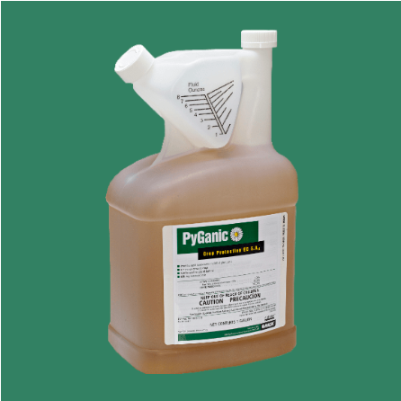
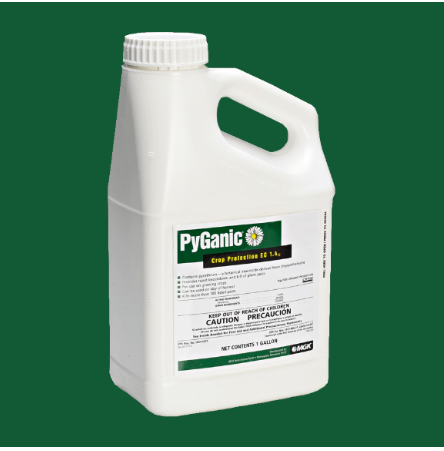

| 除虫菊酯【PyGanic】 |
| 产品图片 |
 除虫菊酯5.0 |
除虫菊酯1.4 |
- 【接触性杀虫剂】
- 制造商: MGK公司
- 客服：Sandra Sleezer（这个客服会相对专业一些）
|
| 基本介绍 |
- 除虫菊酯是一种源自菊花的植物杀虫剂，能提供快速击倒和杀死害虫
- PyGanic是最有效的接触性杀虫剂，如果直接喷到昆虫身上，会被吸收到昆虫的外骨骼和身体中，从而影响它们并杀死害虫。
- PyGanic虽然对昆虫有刺激性，但如果昆虫在接触到杀虫剂之前跳开，除虫菊酯就没法杀死它们（比如叶蝉），所以喷洒时尽可能保证全面覆盖，让喷雾喷到虫子身上。
- Pyganic在阳光下分解的速度最快，但是它需要时间，会在几个小时内慢慢降解。产品接触的紫外线越少，它的分解速度就越慢。在阳光直射下，半衰期（一半产品降解所需时间）约为11小时。所以建议在晚上喷洒，以便有更多的时间避开紫外线的直接照射。雨水也会冲掉产品。雨越大，产品就越快被冲走。尽量在24小时内不会下雨的情况下使用产品，但如果不可能，至少在雨前有足够的时间让产品在表面彻底干燥。
|
下菜时间：
喷洒当天即可下菜。 |
是否可以混打：
PyGanic经常与其他农作物保护产品结合使 |
针对虫子：
黄瓜甲虫、卷心菜虫、谷蛾、叶蝉、 潜叶蝇、毛毛虫、螨类、甜菜粘虫、跳蚤甲虫、白菜蛆、洋葱蛆、粉虱、玉米耳虫、蚜虫、象鼻虫
注：可治近200种虫子，细节可见标签。这里只列举常见的虫子
|
| 用药比例 |
- Pyganic 5.0 （有效成分5%) 比例：
- 大田用药比例：4.5-18盎司／英亩，打叶蝉一般用9盎司／英亩
- 菜园用药比例： 5-10ml/加仑 （50加仑水/英亩）
- 一般用低浓度就可以了，如果虫子很多，可以适当提高浓度。
- Pyganic 1.4 （有效成分1.4%)
- 比例: 16-64oz／英亩， 即9.6-38.4ml/加仑。 大田大叶蝉一般用32盎司／英亩
|
| 使用最佳时间 |
能避开紫外线照射的时间，一般是晚上太阳下山后喷洒
|
| 药物起作用时间： |
- 如果是直接喷到虫子身上，几个小时就能杀死昆虫。
- 叶蝉10多分钟就能杀死。
|
用药间隔： |
- 除非在极端的虫害压力下，否则不要在3天内再次施用。
- 除非虫害压力特别大，否则不要在24小时内重复喷药
|
| 注意事项： |
- 使用除虫菊酯必须保证水的ph值在5.5-7之间。自来水一般偏碱，可以在水里加醋，一般一加仑水兑5ml白醋（根据各地），或者提前准备些雨水（雨水的ph值在7以下），用雨水打药。
- 每季施用不超过10次。
|